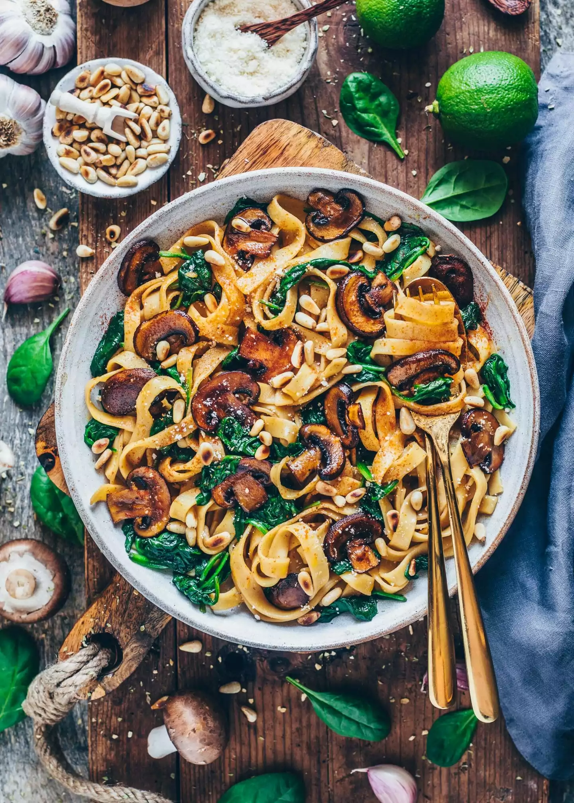

Vegetarian Pasta Sauce with Mushrooms
Home

Using fresh mushrooms makes this sauce meaty and filling.
The use of your favorite jarred sauce makes it easy. The finished sauce tastes homemade. Use a large pot or Dutch oven. Serve sauce topped with freshly grated Parmesan cheese if you like.
Ingredients
- ¼ cup butter
- ½ pound fresh baby portobello mushrooms, sliced
- ½ pound fresh button mushrooms, sliced
- 1 medium onion, finely chopped
- 2 tablespoons dry red wine, or more to taste
- 2 (14.5 ounce) cans diced tomatoes with basil, garlic, and oregano
- 1 (23 ounce) jar pasta sauce (such as Prego®)
- 1 teaspoon minced garlic
- 1 teaspoon Italian seasoning
- 1 pinch white sugar, or to taste
- salt and freshly ground black pepper to taste
Steps
- Melt butter in a large pot over medium heat. Add portobello mushrooms, button mushrooms, and onion. Cook over medium-low heat, stirring occasionally, until mushrooms release their juices and onion is soft and translucent, 6 to 8 minutes.
- Pour in wine to deglaze the pot, scraping up any bits stuck to the bottom.
- Pour in diced tomatoes and cook, stirring, until liquid has slightly reduced, about 5 minutes. Add pasta sauce, garlic, Italian seasoning, sugar, salt, and pepper; stir to combine. Bring to a boil over medium-high heat. Reduce temperature to low and simmer, uncovered, until flavors have blended and desired thickness has been reached, about 15 minutes. Stir sauce occasionally.